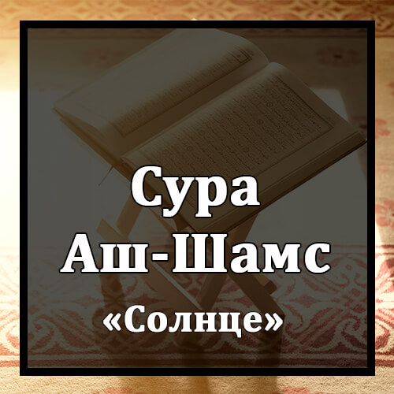

Бисмилляхир-Рахманир-Рахиим
Во имя Аллаха Милостивого и Милосердного!
Уаш-Шамси Уа Духахаа.
Клянусь солнцем и его сиянием!
Уаль-Камари Иза Таляхаа.
Клянусь луной, которая следует за ним!
Уан-Нахари Иза Джалляхаа.
Клянусь днем, который выявляет его (солнца) сияние!
Уаль-Ляйли Иза Йагшахаа.
Клянусь ночью, которая скрывает его!
Уас-Сама`и Уа Ма Банахаа.
Клянусь небом и Тем, Кто его воздвиг (или тем, как Он воздвиг его)!
Уаль-Арды Уа Ма Тахахаа.
Клянусь землей и Тем, Кто ее распростер (или тем, как Он распростер ее)!
Уа Нафсин Уа Ма Саууахаа.
Клянусь душой и Тем, Кто придал ей соразмерный облик (или тем, как Он сделал ее облик соразмерным)
Фа`альхамаха Фуджураха Уа Такуахаа.
и внушил ей порочность и богобоязненность!
Кад Афляха Ман Заккахаа.
Преуспел тот, кто очистил ее,
Уа Кад Хаба Ман Дассахаа.
и понес урон тот, кто опорочил ее.
Каззабат Самуду Битагуахаа.
Самудяне сочли лжецом пророка из-за своего беззакония,
Изинба`аса Ашкахаа.
и самый несчастный из них вызвался убить верблюдицу.
Факаля Ляхум РасулюЛлахи НакатаЛлахи Уа Сукйахаа.
Посланник Аллаха сказал им: "Берегите верблюдицу и питье ее!"
Факаззабуху Фа`акаруха Фадамдама `Алейхим Раббухум Бизанбихим Фасаууахаа.
Они сочли его лжецом и подрезали ей поджилки, а Господь поразил их за этот грех казнью, которая была одинакова для всех (или сровнял над ними землю).
Уа Ля Йахафу `Укбахаа.
Он не опасался последствий этого.